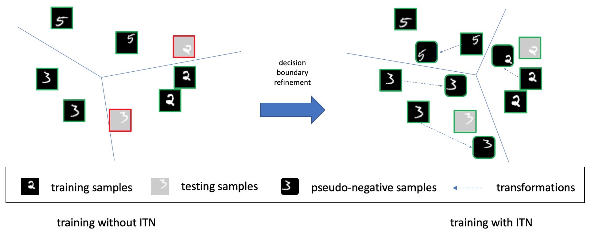

Training deep networks that generalize to a wide range of variations in test data is essential to building accurate and robust image classifiers. Data variations in this paper include but not limited to unseen affine transformations and warping in the training data. One standard strategy to overcome this problem is to apply data augmentation to synthetically enlarge the training set. However, data augmentation is essentially a brute-force method which generates uniform samples from some pre-defined set of transformations. In this paper, we propose a principled approach named introspective transformation network (ITN) that significantly improves network resistance to large variations between training and testing data. This is achieved by embedding a learnable transformation module into the introspective network, which is a convolutional neural network (CNN) classifier empowered with generative capabilities. Our approach alternates between synthesizing pseudo-negative samples and transformed positive examples based on the current model, and optimizing model predictions on these synthesized samples. Experimental results verify that our approach significantly improves the ability of deep networks to resist large variations between training and testing data and achieves classification accuracy improvements on several benchmark datasets, including MNIST, affNIST, SVHN, CIFAR-10 and miniImageNet.

If you find this work useful in your research, please consider citing:
@inproceedings{zhao2020introspective,
title = {Resisting Large Data Variations via Introspective Transformation Network},
author = {Zhao, Yunhan and Tian, Ye and Fowlkes, Charless and Shen, Wei and Yuille, Alan},
booktitle = {IEEE Winter Conference on Applications of Computer Vision (WACV)},
year = {2020},
}
This research was supported by NSFC No. 61672336 and Office of Naval Research N00014-15-1-2356